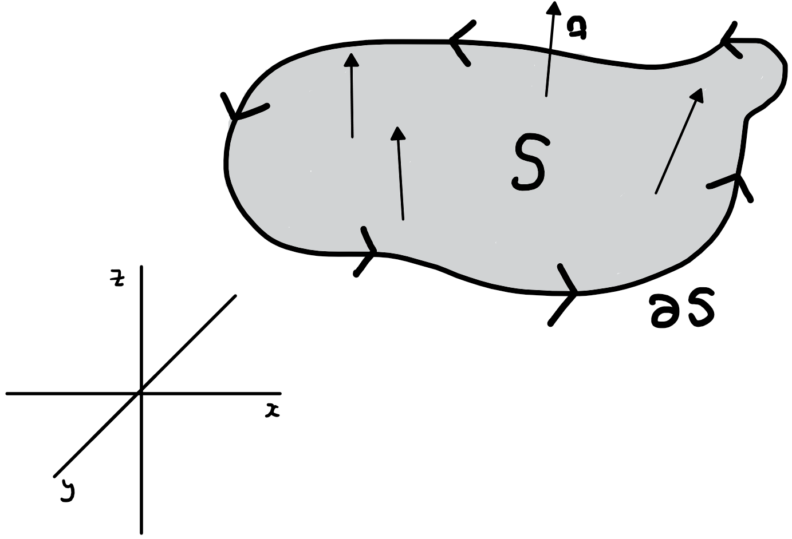
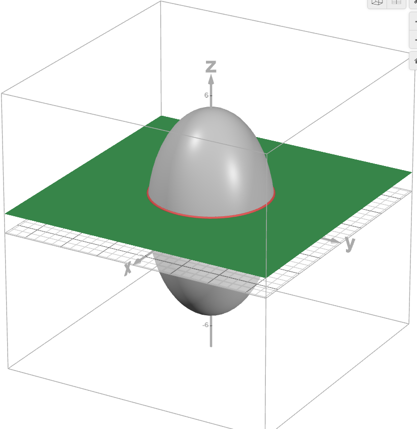

Jonathan Crofts
Nottingham Trent University
The two primary integral theorems in three dimensions are Gauss's Divergence Theorem and Stokes' Theorem. These theorems relate integrals over a region to integrals over its boundary, generalising the one-dimensional Fundamental Theorem of Vector Calculus.
In this lecture we consider Stoke's Theorem, which incidentally we have already seen the 2-D version of!
Stoke's theorem applies to a piece of surface $S$ with a boundary curve $C$ and relates the line integral of a field $\mathbf{F}$ on $C$ to the surface integral of $\mathbf{F}$ on $S$
Gauss generalised this result to three dimensions as we shall see ...
Let $S$ be a smooth two-dimensional surface in $\mathbb{R}^3$ with boundary $\partial S$ a piecewise smooth closed curve. Let $\mathbf{F}$ be any smooth vector field
\[ \mathbf{F} = M(x,y,z)\mathbf{i}+N(x,y,z)\mathbf{j}+P(x,y,z)\mathbf{k} \]defined on $S$. Then
\[ \iint_S \left(\nabla\times\mathbf{F}\right)\cdot\mathbf{n}\,\mathrm{d}\sigma = \oint_{\partial S} \mathbf{F}\cdot\mathrm{d}\mathbf{r} \]Note:
Let $S$ be the part of the ellipsoid $\displaystyle 3x^2+3y^2+z^2=28$ lying above the plane $z=1$, and $\mathbf{n}$ represent the normal to the surface $S$ with positive $z$ component. Let
\[ \mathbf{F} = yz^2\mathbf{i} + 4xz\mathbf{j} + x^2yz\mathbf{k} \]Apply Stoke's theorem to evaluate the surface integral
\[ I = \iint_S \left(\nabla\times\mathbf{F}\right)\cdot\mathbf{n}\,\mathrm{d}\sigma \]By Stoke's theorem we have that
\[ I = \oint_C\mathbf{F}\cdot\mathrm{d}\mathbf{r} \]We need a parametrisation of the bounding curve $C$ ...
The curve $C$ is given by the intersection of the plane $z=1$ and the ellipsoid, i.e.
\[ 3x^2+3y^2+1^2=28 \implies x^2+y^2=9, \quad z = 1 \]That is, the curve $C$ is the circle of radius 3 centred at the origin lying in the plane $z=1$
We can parametrise this curve using cylindrical coordinates
\[ \mathbf{r}(t) = (3\cos{t}, 3\sin{t}, 1),\quad t\in[0,2\pi] \]Differentiating our parametrisation gives
\[ \frac{\mathrm{d}\mathbf{r}}{\mathrm{d}t} = (-\sin{t}, 3\cos{t}, 0) \]and since $\displaystyle\mathbf{F}(\mathbf{r}(t)) = (3\sin{t}, 12\cos{t},27\cos^2{t}\sin{t})$ we have
\[ \begin{align*} \mathbf{F}\cdot\mathrm{d}\mathbf{r} &= \mathbf{F}\cdot\frac{\mathrm{d}\mathbf{r}}{\mathrm{d}t}\,\mathrm{d}t\\ &= (3\sin{t}, 12\cos{t},27\cos^2{t}\sin{t})\cdot(-\sin{t}, 3\cos{t}, 0)\\ &= \color{red}{\boxed{\color{white}{-9\sin^2{t}+36\cos^2{t}}}} \end{align*} \] Thus we need to compute the integral
\[ \begin{align*} I = \oint_C \mathbf{F}\cdot\mathrm{d}\mathbf{r} &= \int_0^{2\pi} \left(-9\sin^2{t}+36\cos^2{t}\right)\,\mathrm{d}t\\ &=\int_0^{2\pi} \left(45\cos^2{t} - 9\right)\,\mathrm{d}t \end{align*} \]Recalling that
\[ \cos^2{t} = \frac{\cos{2t}+1}{2} \]we can solve as
\[ \begin{align*} I &= \int_0^{2\pi} \left(\frac{45}{2}\left(\cos{2t}+1\right) - 9\right)\,\mathrm{d}t\\ &= \left[\frac{45}{4}\sin{2t}+\frac{45}{2}t-9t\right]_0^{2\pi} = \color{red}{\boxed{\color{white}{27\pi}}} \end{align*} \]Using Stoke's theorem, show that the circulation of the field
\[ \mathbf{F} = y\mathbf{i}-x\mathbf{j} \]around the curve $C: x^2+y^2=9$ bounding the hemisphere
\[ x^2+y^2+z^2=9, \quad z\geq 0 \]is given by
\[ \oint_C\mathbf{F}\cdot\mathrm{d}\mathbf{r} = -18\pi \]Stoke's theorem gives
\[ \oint_C\mathbf{F}\cdot\mathrm{d}\mathbf{r} = \iint_S\left(\nabla\times\mathbf{F}\right)\cdot\mathbf{n}\,\mathrm{d}\sigma \]We need to compute the surface integral ...
A spherical coordinate representation of the hemisphere is
\[ \mathbf{r}(\theta, \phi) = (3\cos\theta\sin\phi, 3\sin\theta\sin\phi, 3\cos\phi),\quad\theta\in[0,2\pi),~ \phi\in[0,\pi/2] \]and so
\[ \begin{align*} \mathbf{r}_\theta\times\mathbf{r}_\phi &= \begin{vmatrix}\mathbf{i}&\mathbf{j}&\mathbf{k}\\ -3\sin\theta\sin\phi&3\cos\theta\sin\phi&0\\ 3\cos\theta\cos\phi&3\sin\theta\cos\phi&-3\sin\phi \end{vmatrix}\\ &= (-9\cos\theta\sin^2\phi, -9\sin^2\phi\sin\theta, -9\sin\phi\cos\phi) \end{align*} \]So that
\[ ||\mathbf{r}_\theta\times\mathbf{r}_\phi|| = 9\sin\phi \qquad\text{(Exercise!!!)} \]Giving the surface element:
\[ \mathrm{d}\sigma = ||\mathbf{r}_\theta\times\mathbf{r}_\phi||\,\mathrm{d}\theta\mathrm{d}\phi = \color{red}{\boxed{\color{white}{9\sin\phi\,\mathrm{d}\theta\mathrm{d}\phi}}} \]We need to compute
\[ \iint_S\left(\nabla\times\mathbf{F}\right)\cdot\mathbf{n}\,\mathrm{d}\sigma = \int_0^{\pi/2}\int_0^{2\pi} \left(\nabla\times\mathbf{F}\right)\cdot\mathbf{n}\,\left(9\sin\phi\right)\mathrm{d}\theta\mathrm{d}\phi \]The cross product term is
\[ \nabla\times\mathbf{F} = \begin{vmatrix} \mathbf{i}&\mathbf{j}&\mathbf{k}\\ \partial/\partial x&\partial/\partial y&\partial/\partial z&\\ y&-x&0 \end{vmatrix} = (0, 0, -2) \]and the unit normal is
\[ \mathbf{n} = \frac{\nabla f}{||\nabla f||} = \frac{1}{\sqrt{x^2+y^2+z^2}}(x,y,z) = \frac{1}{3}(x, y, z) \]So that
\[ \left(\nabla\times\mathbf{F}\right)\cdot\mathbf{n} = (0, 0, -2)\cdot\frac{1}{3}(x, y, z) = -\frac{2}{3}z \]Or in spherical coordinates
\[ \color{red}{\boxed{\color{white}{\left(\nabla\times\mathbf{F}\right)\cdot\mathbf{n} = -2\cos\phi}}} \]Putting this all together
\[ \begin{align*} \iint_S\left(\nabla\times\mathbf{F}\right)\cdot\mathbf{n}\,\mathrm{d}\sigma &= \int_0^{\pi/2}\int_0^{2\pi}\left(-18\cos\phi\sin\phi\right)\,\mathrm{d}\theta\mathrm{d}\phi\\ &=\int_0^{\pi/2}\bigg[-18\theta\cos\phi\sin\phi\bigg]_0^{2\pi}\,\mathrm{d}\phi\\ &=-36\pi\int_0^{\pi/2}\cos\phi\sin\phi\,\mathrm{d}\phi\\ &= -36\pi\bigg[\frac{1}{2}\sin^2\phi\bigg]_0^{\pi/2} = \color{red}{\boxed{\color{white}{-18\pi}}} \end{align*} \]As required
Stoke's theorem generalises the circulation version of Green's theorem.
To see this, let us view a planar region $\mathcal{D}$ as a flat surface with $z=0$, and suppose that
\[\mathbf{F} = (F_1, F_2, 0)\]is a vector field
If $C$ denotes the closed curve bounding the region $\mathcal{D}$ (also denoted $\partial\mathcal{D}$) then the line integral of $\mathbf{F}$ about $C$ is
\[ \oint_{C}\mathbf{F}\cdot\mathrm{d}\mathbf{r} = \oint_C F_1\mathrm{d}x + F_2\mathrm{d}y \]We can rewrite this using Green's theorem as
\[ \oint_C F_1\mathrm{d}x + F_2\mathrm{d}y = \iint_{\mathcal{D}}\left(\partial F_2/\partial x - \partial F_1/\partial y\right)\,\mathrm{d}x\mathrm{d}y \]But the integrand in the RHS of Green's theorem is just the $\mathbf{k}$ component of the curl of $\mathbf{F}$, i.e. \[ \iint_{\mathcal{D}}\left(\partial F_2/\partial x - \partial F_1/\partial y\right)\,\mathrm{d}x\mathrm{d}y = \iint_\mathcal{D}\left(\nabla\times\mathbf{F}\right)\cdot\mathbf{k}\,\mathrm{d}A \]
where $\mathrm{d}A = \mathrm{d}x\mathrm{d}y$
Now, since our surface is 'flat' we have that $\mathbf{n}=\mathbf{k}$ giving the relation
\[ \color{red}{\boxed{\color{white}{ \begin{align*} \oint_{C}\mathbf{F}\cdot\mathrm{d}\mathbf{r} &= \iint_\mathcal{D}\left(\nabla\times\mathbf{F}\right)\cdot\mathbf{k}\,\mathrm{d}A \\ &= \iint_\mathcal{D}\left(\nabla\times\mathbf{F}\right)\cdot\mathbf{n}\,\mathrm{d}\sigma \end{align*} }}} \]In a planar domain the surface element and the area element are equal, i.e. $\mathrm{d}\sigma = \mathrm{d}A$